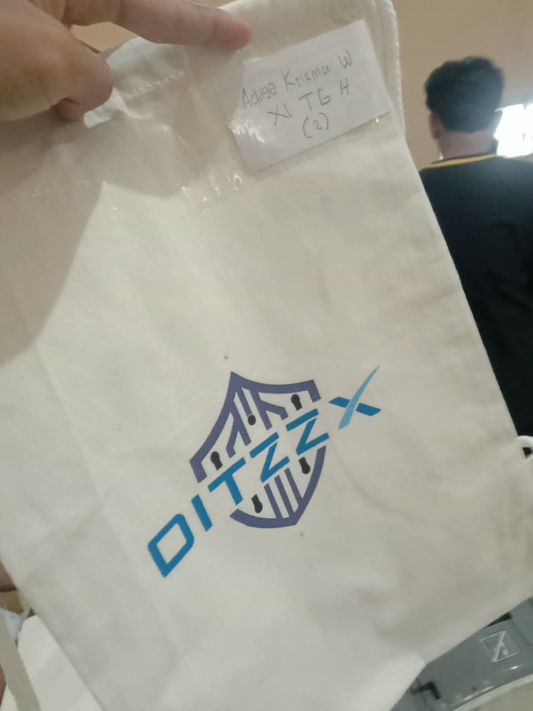
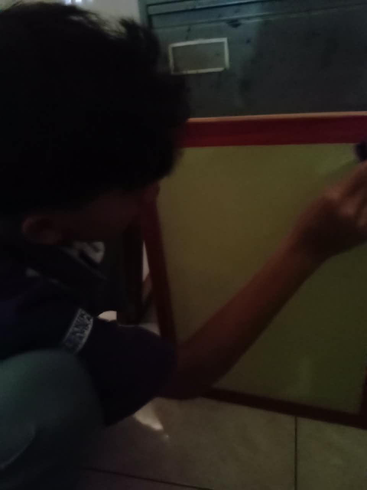
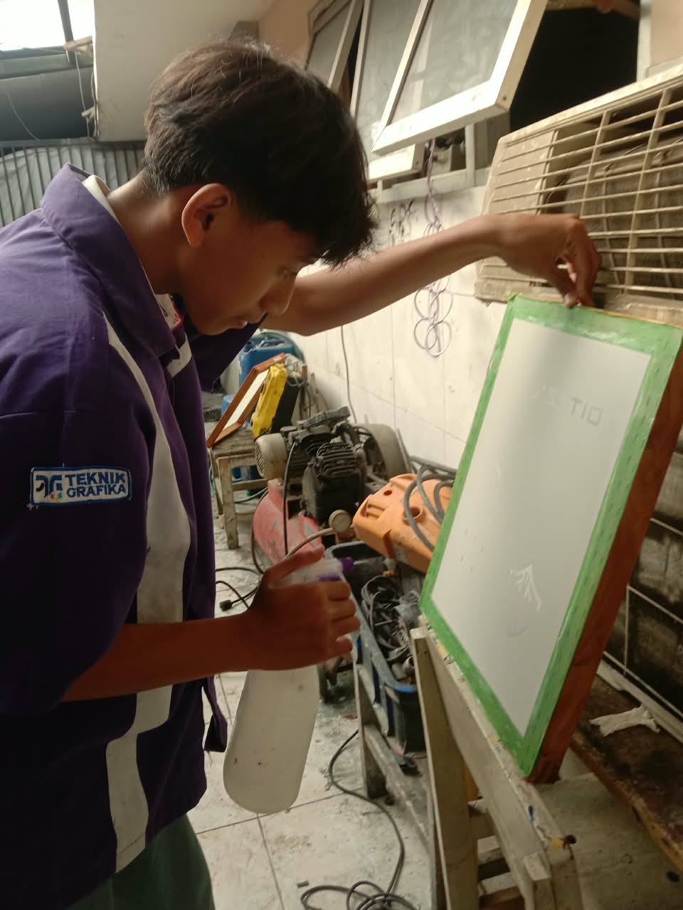
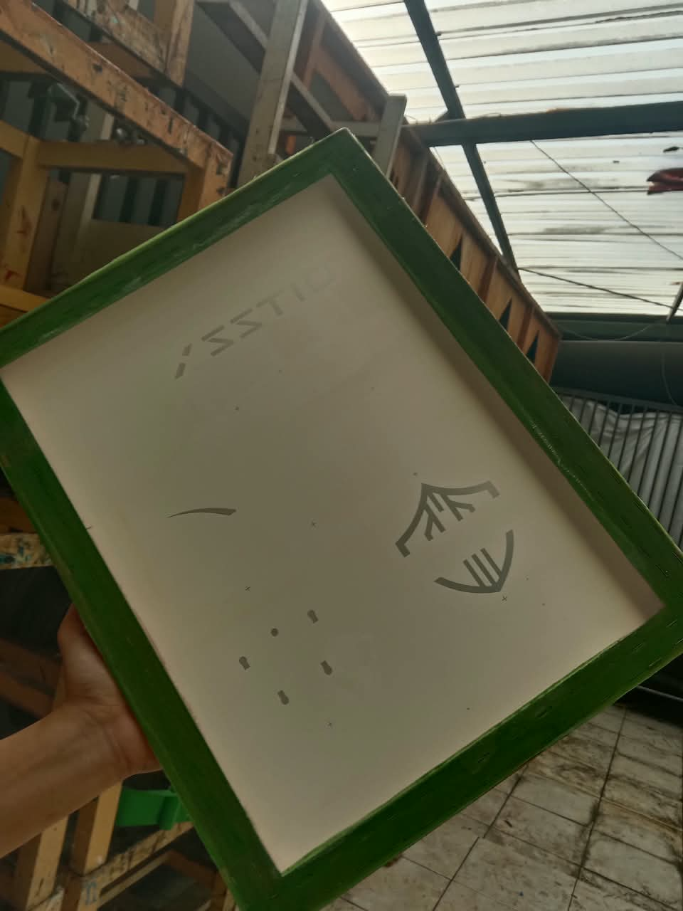
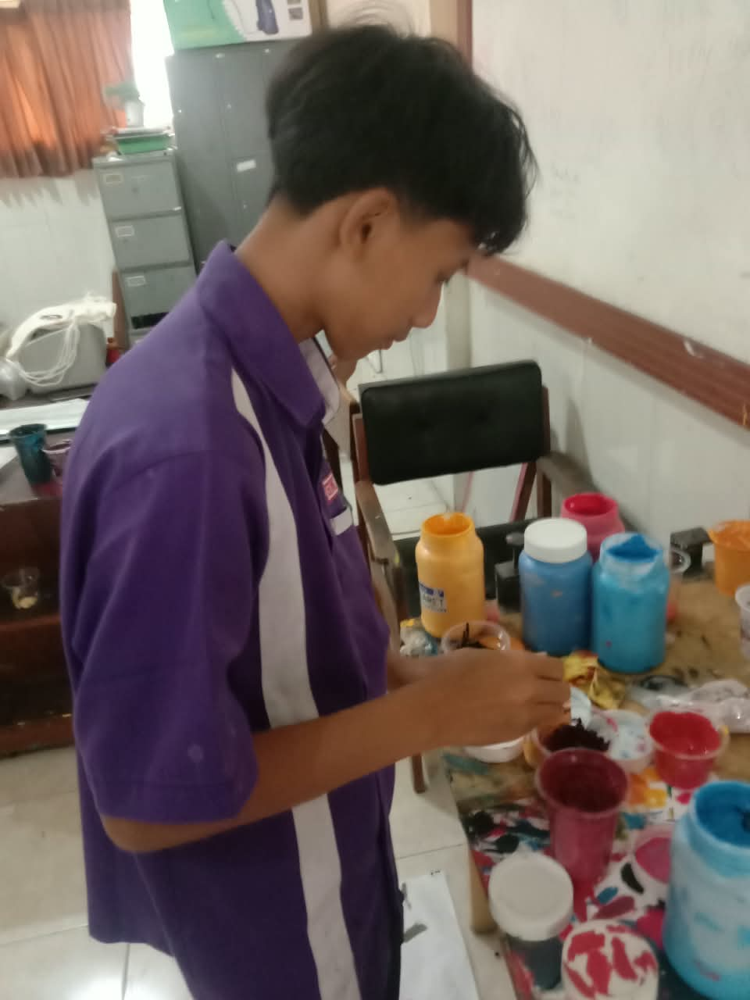
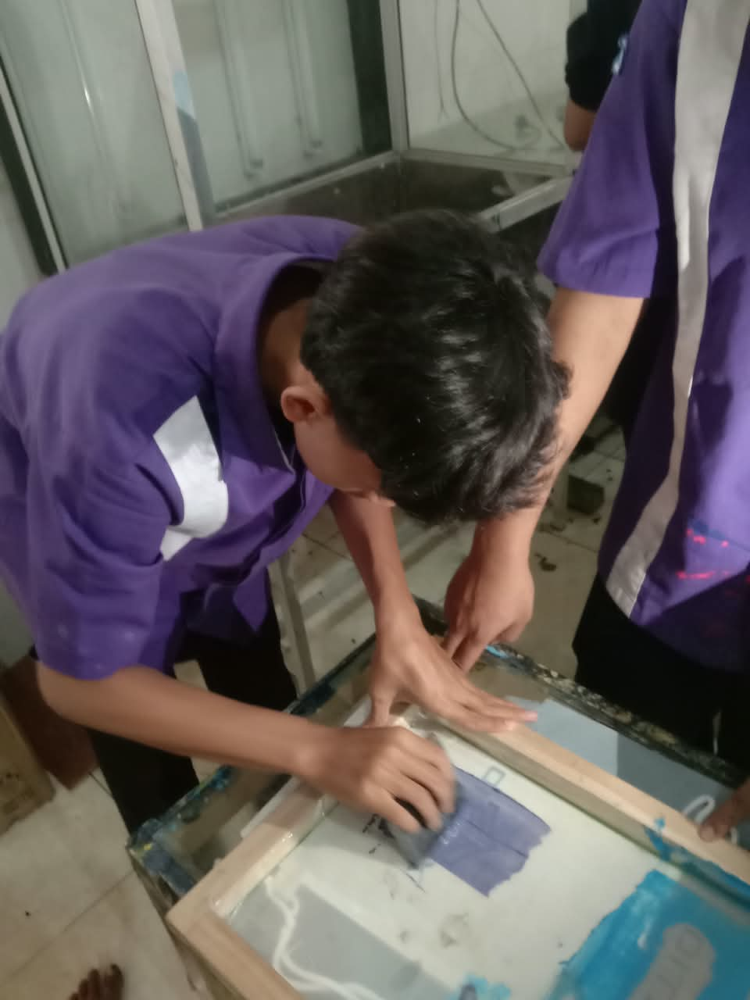
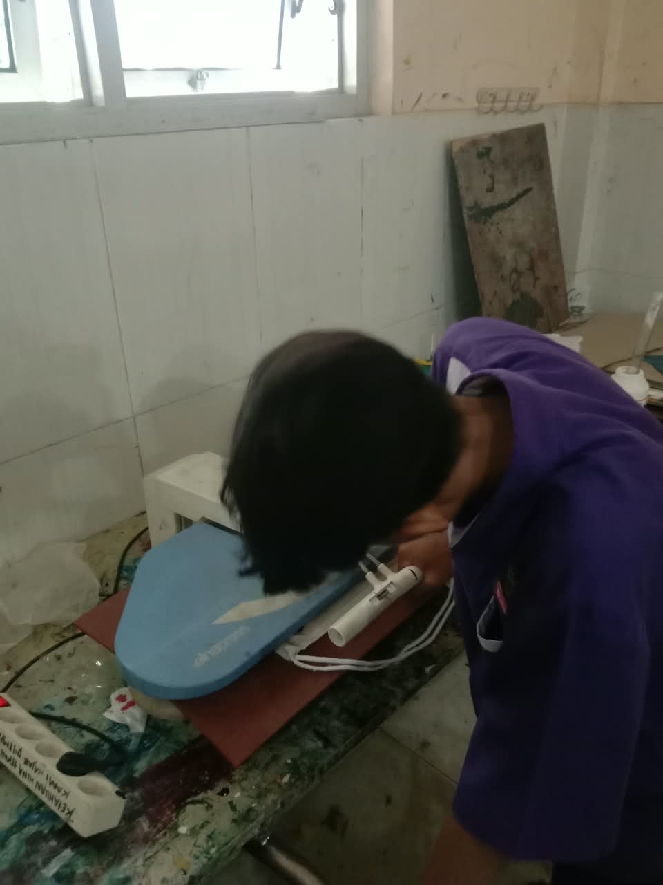

Hasil AkhirProject
Pembuatan Tas dengan Sablon Manual
Proyek pembuatan tas sablon manual ini merupakan tugas Project Based Learning (PJBL) yang dikerjakan secara individu. Foto utama menampilkan hasil akhir tas sablon.
Penjelasan
Proyek pembuatan tas sablon manual merupakan bagian dari kegiatan Project Based Learning (PJBL) untuk memenuhi tugas pembelajaran. Kegiatan ini dilaksanakan pada 28–29 Juli di Bengkel Lab Sablon, dibimbing oleh Bapak Lamudi, dan dikerjakan secara individu. Proses pengerjaan meliputi pembuatan afdruk pada screen, eksposing desain, koreksi hasil afdruk, pencampuran warna tinta, penintaan, hingga pengepresan sebagai tahap finishing.
Detail Dokumentasi

Dokumentasi 3:4Dokumentasi 1
Proses Afdruk Screen
Deskripsi
Pada tahap ini, emulsi diratakan pada permukaan screen untuk menutup pori-pori yang tidak akan dilalui tinta.

Dokumentasi 3:4Dokumentasi 2
Proses Eksposing
Deskripsi
Setelah screen dilapisi emulsi dan melewati proses penyinaran, proses eksposing dilakukan dengan penyiraman / penyemprotan. Tahap ini bertujuan membuka image pada screen sebagai acuan saat mencetak.

Dokumentasi 3:4Dokumentasi 3
Proses Koreksi Hasil Afdruk
Deskripsi
Tahap ini dilakukan untuk memeriksa kembali hasil afdruk sebelum proses pencetakan dimulai.

Dokumentasi 3:4Dokumentasi 4
Proses Pencampuran Warna
Deskripsi
Pada tahap ini, warna tinta dicampurkan hingga menghasilkan warna yang sesuai dengan desain.

Dokumentasi 3:4Dokumentasi 5
Proses Penintaan
Deskripsi
Pada tahap ini, tinta diaplikasikan pada screen dan diratakan menggunakan rakel. Tinta kemudian ditekan melalui screen agar desain tercetak pada permukaan tas.

Dokumentasi 3:4Dokumentasi 6
Proses Pengeringan / Finishing
Deskripsi
Pada tahap ini, tas yang sudah disablon dipres menggunakan alat pemanas untuk membantu tinta melekat lebih kuat pada media cetak.
Galeri Foto
Dokumentasi Lainnya
.jpeg)
.jpeg)
.jpeg)

.jpeg)